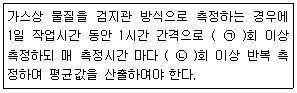
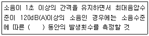
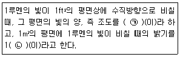
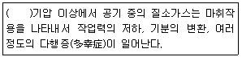
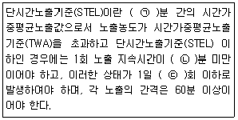

산업위생관리기사 (2019-03-03 기출문제)
1과목: 산업위생학개론
1. 신체적 결함과 이에 따른 부적합 작업을 짝지은 것으로 틀린 것은?
- 심계항진 - 정밀작업
- 간기능 장해 - 화학공업
- 빈혈증 - 유기용제 취급작업
- 당뇨증 - 외상받기 쉬운 작업
(정답률: 56%)

2. OSHA가 의미하는 기관의 명칭으로 맞는 것은?
- 세계보건기구
- 영국보건안전부
- 미국산업위생협회
- 미국산업안전보건청
(정답률: 66%)
3. 사고예방대책의 기본원리 5단계를 순서대로 나열한 것으로 맞는 것은?
- 사실의 발견→조직→분석→시정책(대책)의 선정→시정책(대책)의 적용
- 조직→분석→사실의 발견→시정책(대책)의 선정→시정책(대책)의 적용
- 조직→사실의 발견→분석→시정책(대책)의 선정→시정책(대책)의 적용
- 사실의 발견→분석→조직→시정책(대책)의 선정→시정책(대책)의 적용
(정답률: 80%)
4. 실내공기의 오염에 따른 건강상의 영향을 나타내는 용어가 아닌 것은?
- 새집증후군
- 헌집증후군
- 화학물질과민증
- 스티븐슨존슨증후군
(정답률: 80%)
5. 국가 및 기관별 허용기준에 대한 사용 명칭을 잘못 연결한 것은?
- 영국 HSE - OEL
- 미국 OSHA - PEL
- 미국 ACGIH - TLV
- 한국 - 화학물질 및 물리적 인자의 노출기준
(정답률: 69%)
6. 물체의 실제무게를 미국 NIOSH의 권고중량물한계기준(RWL)으로 나누어 준 값을 무엇이라 하는가?
- 중량상수(LC)
- 빈도승수(FM)
- 비대칭승수(AM)
- 중량물 취급지수(LI)
(정답률: 86%)
7. 1994년 ABIH에서 채택된 산업위생전문가의 윤리강령 내용으로 틀린 것은?
- 산업위생 활동을 통해 얻은 개인 및 기업의 정보는 누설하지 않는다.
- 과학적 방법의 적용과 자료의 해석에서 경험을 통한 전문가의 주관성을 유지한다.
- 전문적 판단이 타협에 의하여 좌우될 수 있거나 이해관계가 있는 상황에는 개입하지 않는다.
- 쾌적한 작업환경을 만들기 위해 산업위생이론을 적용하고 책임 있기 행동한다.
(정답률: 83%)
8. 최대작업영역(maximum working area)에 대한 설명으로 맞는 것은?
- 양팔을 곧게 폈을 때 도달할 수 있는 최대영역
- 팔을 위 방향으로만 움직이는 경우에 도달할 수 있는 작업영역
- 팔을 아래 방향으로만 움직이는 경우에 도달할 수 있는 작업영역
- 팔을 가볍게 몸체에 붙이고 팔꿈치를 구부린 상태에서 자유롭게 손이 닿는 영역
(정답률: 82%)
9. 산업안전보건법령상 석면에 대한 작업환경측정결과 측정치가 노출기준을 초과하는 경우 그 측정일로부터 몇 개월에 몇 회 이상의 작업환경측정을 하여야 하는가?
- 1개월에 1회 이상
- 3개월에 1회 이상
- 6개월에 1회 이상
- 12개월에 1회 이상
(정답률: 71%)
10. 미국산업위생학회(AHIA)에서 정한 산업위생의 정의로 옳은 것은?
- 작업장에서 인종, 정치적 이념, 종교적 갈등을 배제하고 작업자의 알권리를 최대한 확보해주는 사회과학적 기술이다.
- 작업자가 단순하게 허약하지 않거나 질병이 없는 상태가 아닌 육체적, 정신적 및 사회적인 안녕 상태를 유지하도록 관리하는 과학과 기술이다.
- 근로자 및 일반대중에게 질병, 건강장애, 불쾌감을 일으킬 수 있는 작업 환경요인과 스트레스를 예측, 측정, 평가 및 관리하는 과학이며 기술이다.
- 노동 생산성보다는 인권이 소중하다는 이념하에 노사간 갈등을 최소화하고 협력을 도모하여 최대한 쾌적한 작업환경을 유지 증진하는 사회과학이며 자연과학이다.
(정답률: 86%)
11. 직업성 질환의 범위에 대한 설명으로 틀린 것은?
- 합병증이 원발성 질환과 불가분의 관계를 가지는 경우를 포함한다.
- 직업상 업무에 기인하여 1차적으로 발생하는 원발성 질환은 제외한다.
- 원발성 질환과 합병 작용하여 제2의 질환을 유발하는 경우를 포함한다.
- 원발성 질환부위가 아닌 다른 부위에서도 동일한 원인에 의하여 제2의 질환을 일으키는 경우를 포함한다.
(정답률: 81%)
12. 산업피로에 대한 설명으로 틀린 것은?
- 산업피로는 원천적으로 일종의 질병이며 비가역적 생체변화이다.
- 산업피로는 건강장해에 대한 경고반응이라고 할 수 있다.
- 육체적, 정신적 노동부하에 반응하는 생체의 태도이다.
- 산업피로는 생산성의 저하뿐만 아니라 재해와 질병의 원인이 된다.
(정답률: 86%)
13. 산업안전보건법상 사무실 공기관리에 있어 오염물질에 대한 관리 기준이 잘못 연결된 것은?
- 오존 - 0.1ppm이하
- 일산화탄소 - 10ppm이하
- 이산화탄소 - 1000ppm이하
- 포름알데히드(HCHO) - 0.1ppm이하
(정답률: 41%)
14. 밀폐공간과 관련된 설명으로 틀린 것은?
- 산소결핍이란 공기 중의 산소농도가 16%미만인 상태를 말한다.
- 산소결핍증이란 산소가 결핍된 공기를 들이마심으로써 생기는 증상을 말한다.
- 유해가스란 탄산가스, 일산화탄소, 황화수소 등의 기체로서 인체에 유해한 영향을 미치는 물질을 말한다.
- 적정공기란 산소농도의 범위가 18%이상 23.5%미만, 탄산가스의 농도가 1.5%미만, 일산화탄소의 농도가 30ppm미만, 황화수소의 농도가 10ppm미만인 수준의 공기를 말한다.
(정답률: 76%)
15. 산업피로의 대책으로 적합하지 않은 것은?
- 불필요한 동작을 피하고 에너지 소모를 적게 한다.
- 작업과정에 따라 적절한 휴식시간을 가져야 한다.
- 작업능력에는 개인별 차이가 있으므로 각 개인마다 작업량을 조정해야 한다.
- 동적인 작업은 피로를 더하게 하므로 가능한 한 정적인 작업으로 전환한다.
(정답률: 88%)
16. 산업안전보건법에서 정하는 중대재해라고 볼 수 없는 것은?
- 사망자가 1명 이상 발생한 재해
- 부상자 또는 직업성질병자가 동시에 10명 이상 발생한 재해
- 3개월 이상의 요양을 요하는 부상자가 동시에 2명 이상 발생한 재해
- 재산피해액 5천만원 이상의 재해
(정답률: 86%)
17. 상시 근로자 수가 1000명인 사업장에 1년 동안 6건의 재해로 8명의 재해자가 발생하였고, 이로 인한 근로손실일수는 80일이었다. 근로자가 1일 8시간씩 매월 25일씩 근무하였다면, 이 사업장의 도수율은 얼마인가?
- 0.03
- 2.50
- 4.00
- 8.00
(정답률: 69%)
18. 근육운동의 에너지원 중에서 혐기성대사의 에너지원에 해당되는 것은?
- 지방
- 포도당
- 글리코겐
- 단백질
(정답률: 71%)
19. 산업안전보건법에서 산업재해를 예방하기 위하여 잠재적 위험성을 발견하고 그 개선대책을 수립할 목적으로 고용노동부장관이 지정하는 조사 평가를 무엇이라 하는가?
- 위험성평가
- 작업환경측정, 평가
- 안전, 보건진단
- 유해성, 위험성 조사
(정답률: 67%)
20. 육체적 작업능력(PWC)이 15kcal/min인 근로자가 1일 8시간 물체를 운반하고 있다. 이 때의 작업대사율이 6.5kcal/min이고, 휴식시의 대사량이 1.5kcal/min일 때 매 시간당 적정 휴식시간은 약 얼마인가? (단, Hering의 식을 적용한다.)
- 18분
- 25분
- 30분
- 42분
(정답률: 68%)
2과목: 작업위생측정 및 평가
21. 유기용제 작업장에서 측정한 톨루엔 농도는 65, 150, 175, 63, 83, 112, 58, 49, 2⑤, 178 ppm일 때. 산술평균과 기하평균값은 약 몇 ppm인가?
- 산술평균 108.4, 기하평균 100.4
- 산술평균 108.4, 기하평균 117.6
- 산술평균 113.8, 기하평균 100.4
- 산술평균 113.8, 기하평균 117.6
(정답률: 76%)
22. 유사노출그룹에 대한 설명으로 틀린 것은?
- 유사노출그룹은 노출되는 유해인자의 농도와 특성이 유사하거나 동일한 근로자 그룹을 말한다.
- 역학조사를 수행할 때 사건이 발생된 근로자가 속한 유사노출그룹의 노출농도를 근거로 노출원인을 추정할 수 있다.
- 유사노출그룹 설정을 위해 시료채취수가 과다해지는 경우가 있다.
- 유사노출그룹은 모든 근로자의 노출 상태를 측정하는 효과를 가진다.
(정답률: 68%)
23. 입자의 가장자리를 이등분한 직경으로 과대평가될 가능성이 있는 직경은?
- 마틴 직경
- 페렛 직경
- 공기역학 직경
- 등면적 직경
(정답률: 66%)
24. 다음 중 1차 표준기구가 아닌 것은?
- 오리피스 미터
- 폐활량계
- 가스치환병
- 유리 피스톤 미터
(정답률: 76%)
25. 온도 표시에 대한 설명으로 틀린 것은? (단, 고용노동부고시를 기준으로 한다.)
- 절대온도는 Κ로 표시하고 절대온도 0 Κ는 -273℃로 한다.
- 실온은 1~35℃, 미온은 30~40℃로 한다.
- 온도의 표시는 셀시우스(Celcius)법에 따라 아라비아 숫자의 오른쪽에 ℃를 붙인다.
- 냉수는 4℃이하, 온수는 60~70℃를 말한다.
(정답률: 78%)
26. 원통형 비누거품미터를 이용하여 공기시료채취기의 유량을 보정하고자 한다. 원통형 비누거품미터의 내경은 4cm이고 거품막이 30cm의 거리를 이동하는데 10초의 시간이 걸렸다면 이 공기시료채취기의 유량은 약 몇(cm3/sec)인가?
- 37.7
- 16.5
- 8.2
- 2.2
(정답률: 49%)
27. 출력이 0.4W의 작은 점음원에서 10m 떨어진 곳의 음압수준은 약 몇 dB인가?(단, 공기의 밀도는 1.18kg/m3이고, 공기에서 음속은 344.4m/sec이다.)
- 80
- 85
- 90
- 95
(정답률: 57%)
28. 입자의 크기에 따라 여과기전 및 채취효율이 다르다. 입자크기가 0.1~0.5㎛일 때 주된 여과 기전은?
- 충돌과 간섭
- 확산과 간섭
- 차단과 간섭
- 침강과 간섭
(정답률: 72%)
29. 입경이 20㎛이고 입자비중이 1.5인 입자의 침강 속도는 약 몇 cm/sec인가?
- 1.8
- 2.4
- 12.7
- 36.2
(정답률: 72%)
30. 측정결과를 평가하기 위하여 “표준화 값”을 산정할 때 필요한 것은?(단, 고용노동부고시를 기준으로 한다.)
- 시간가중평균값(단시간 노출값)과 허용기준
- 평균농도와 표준편차
- 측정농도과 시료채취분석오차
- 시간가중평균값(단시간 노출값)과 평균농도
(정답률: 58%)
31. 다음은 가스상 물질을 측정 및 분석하는 방법에 대한 내용이다. ( )안에 알맞은 것은?(단, 고용노동부 고시를 기준으로 한다.)

- ㉠ : 6 ㉡ : 2
- ㉠ : 6 ㉡ : 3
- ㉠ : 8 ㉡ : 2
- ㉠ : 8 ㉡ : 3
(정답률: 69%)
32. 에틸렌글리콜이 20℃, 1기압에서 공기 중에서 증기압이 0.⑤mmHg라면, 20℃, 1기압에서 공기 중 포화농도는 약 몇 ppm인가?
- 55.4
- 65.8
- 73.2
- 82.1
(정답률: 66%)
33. 입자상 물질을 채취하기 위해 사용하는 막여과지에 관한 설명으로 틀린 것은?
- MCE 막여과지 : 산에 쉽게 용해되므로 입자상 물질 중의 금속을 채취하여 원자흡광광도법으로 분석하는데 적당하다.
- PVC 막여과지 : 유리규산을 채취하여 X-선 회절법으로 분석하는데 적절하다.
- PTFE 막여과지 : 농약, 알칼리성 먼지, 콜타르피치 등을 채취하는데 사용한다.
- 은막 여과지 : 금속은, 결합제, 섬유 등을 소결하여 만든 것으로 코크스오븐에 대한 저항이 약한 단점이 있다.
(정답률: 66%)
34. 유량, 측정시간, 회수율 및 분석에 의한 오차가 각각 18%, 3%, 9%, 5%일 때, 누적오차는 약 몇 %인가?
- 18
- 21
- 24
- 29
(정답률: 74%)
35. 옥외(태양광선이 내리쬐는 장소)에서 습구흑구온도지수(WBGT)의 산출식은?
- (0.7×자연습구온도)+(0.2×건구온도)+(0.1×흑구온도)
- (0.7×자연습구온도)+(0.2×흑구온도)+(0.1×건구온도)
- (0.7×자연습구온도)+(0.3×흑구온도)
- (0.7×자연습구온도)+(0.2×건구온도)
(정답률: 77%)
36. 다음 중 78℃와 동등한 온도는?
- 351K
- 189℉
- 26℉
- 195K
(정답률: 75%)
37. 이황화탄소(CS2)가 배출되는 작업장에서 시료분석농도가 3시간에 3.5ppm, 2시간에 15.2ppm, 3시간에 5.8ppm일 때, 시간가중평균값은 약 몇 ppm인가?
- 3.7
- 6.4
- 7.3
- 8.9
(정답률: 68%)
38. 소음측정방법에 관한 내용으로 ( )에 알맞은 것은? (단, 고용노동부 고시 기준)

- 1분
- 2분
- 3분
- 5분
(정답률: 78%)
39. 측정에서 변이계수를 알맞게 나타낸 것은?
- 표준편차/산술평균
- 기하평균/표준편차
- 표준오차/표준편차
- 표준편차/표준오차
(정답률: 72%)
40. 다음 중 자외선에 관한 내용과 가장 거리가 먼 것은?
- 비전리 방사선이다.
- 인체와 관련된 Dorno선을 포함한다.
- 100~1000nm사이의 파장을 갖는 전자파를 총칭하는 것으로 열선이라고도 한다.
- UV-B는 약 280~315nm의 파장의 자외선이다.
(정답률: 67%)
3과목: 작업환경관리대책
41. 후드의 유입계수가 0.7이고 속도압이 20mmH2O일 때, 후드의 유입손실은 약 몇 mmH2O인가?
- 10.5
- 20.8
- 32.5
- 40.8
(정답률: 63%)
42. 주물작업 시 발생되는 유해인자로 가장 거리가 먼 것은?
- 소음 발생
- 금속흄 발생
- 분진 발생
- 자외선 발생
(정답률: 69%)
43. 보호구의 보호정도와 한계를 나타내는데 필요한 보호계수(PF)를 산정하는 공식으로 옳은 것은? (단, 보호구 밖의 농도는 C0이고, 보호구 안의 농도는 C1이다.)
- PF = C0 / C1
- PF = C1 / C0
- PF = (C1 / C0) × 100
- PF = (C1 / C0) × 0.5
(정답률: 59%)
44. 국소배기시설의 일반적 배열순서로 가장 적절한 것은?
- 후드→덕트→송풍기→공기정화장치→배기구
- 후드→송풍기→공기정화장치→덕트→배기구
- 후드→덕트→공기정화장치→송풍기→배기구
- 후드→공기정화장치→덕트→송풍기→배기구
(정답률: 70%)
45. 작업장이 음압수준이 86dB(A)이고, 근로자는 귀덮개(차음평가지수=19)를 착용하고 있을 때 근로자에게 노출되는 음압수준은 약 몇 dB(A)인가?
- 74
- 76
- 78
- 80
(정답률: 68%)
46. 작업장에 설치된 후드가 100m3/min으로 환기되도록 송풍기를 설치하였다. 사용함에 따라 정압이 절반으로 줄었을 때, 환기량의 변화로 옳은 것은? (단, 상사법칙을 적용한다.)
- 환기량이 33.3m3/min으로 감소하였다.
- 환기량이 50m3/min으로 감소하였다.
- 환기량이 57.7m3/min으로 감소하였다.
- 환기량이 70.7m3/min으로 감소하였다.
(정답률: 37%)
47. 회전수가 600rpm이고, 동력은 5kW인 송풍기의 회전수를 800rpm으로 상향조정하였을 때, 동력은 약 몇 kW인가?
- 6
- 9
- 12
- 15
(정답률: 52%)
48. 작업환경개선 대책 중 격리와 가장 거리가 먼 것은?
- 국소배기 장치의 설치
- 원격 조정 장치의 설치
- 특수 저장 창고의 설치
- 콘크리트 방호벽의 설치
(정답률: 68%)
49. 주물사, 고온가스를 취급하는 공정에 환기시설을 설치하고자 할 때, 다음 중 덕트의 재료로 가장 적절한 것은?
- 아연도금 강판
- 중질 콘크리트
- 스테인레스 강판
- 흑피 강판
(정답률: 66%)
50. 보호구의 재질과 적용 대상 화학물질에 대한 내용으로 잘못 짝지어진 것은?
- 천연고무 - 극성 용제
- Butyl 고무 - 비극성 용제
- Nitrile 고무 - 비극성 용제
- Neoprene 고무 - 비극성 용제
(정답률: 69%)
51. 다음 중 덕트 합류시 댐퍼를 이용한 균형유지법의 특징과 가장 거리가 먼 것은?
- 임의로 댐퍼 조정 시 평형 상태가 깨진다.
- 시설 설치 후 변경이 어렵다.
- 설계계산이 상대적으로 간단하다.
- 설치 후 부적당한 배기유량의 조절이 가능하다.
(정답률: 53%)
52. 작업장 내 열부하량이 5000kcal/h이며, 외기온도 20℃, 작업장 내 온도는 35℃이다. 이 때 전체 환기를 위한 필요 환기량은 약 몇 m3/min인가? (단, 정압비열은 0.3kcal/(m3.℃)이다.)
- 18.5
- 37.1
- 185
- 1111
(정답률: 37%)
53. 공기가 20℃의 송풍관 내에서 20m/sec의 유속으로 흐를 때, 공기의 속도압은 약 몇 mmH2O인가? (단, 공기밀도는 1.2kg/m3)
- 15.5
- 24.5
- 33.5
- 40.2
(정답률: 69%)
54. 다음 중 전체 환기를 적용할 수 있는 상황과 가장 거리가 먼 것은?
- 유해물질의 독성이 높은 경우
- 작업장 특성상 국소배기장치의 설치가 불가능한 경우
- 동일 사업장에 다수의 오염발생원이 분산되어 있는 경우
- 오염발생원이 근로자가 작업하는 장소로부터 멀리 떨어져 있는 경우
(정답률: 73%)
55. 환기량을 Q(m3/hr), 작업장 내 체적을 V(m3)라고 할 때, 시간당 환기 횟수(회/hr)로 옳은 것은?
- 시간당 환기 횟수 = Q × V
- 시간당 환기 횟수 = V / Q
- 시간당 환기 횟수 = Q / V
- 시간당 환기 횟수 = Q × √V
(정답률: 58%)
56. 푸쉬풀 후드(push-pull hood)에 대한 설명으로 적합하지 않은 것은?
- 도금조와 같이 폭이 넓은 경우에 사용하면 포집효율을 증가시키면서 필요유량을 감소시킬 수 있다.
- 공정에서 작업물체를 처리조에 넣거나 꺼내는 중에 발생되는 공기막 파괴현상을 사전에 방지할 수 있다.
- 개방조 한 변에서 압축공기를 이용하여 오염물질이 발생하는 표면에 공기를 불어 반대쪽에 오염물질이 도달하게 한다.
- 제어속도는 푸쉬 제트기류에 의해 발생한다.
(정답률: 56%)
57. 덕트 직경이 30cm이고 공기유속이 10m/sec일 때, 레이놀드 수는 약 얼마인가?(단, 공기의 점성계수는 1.85×10-5kg/sec.m, 공기밀도는 1.2kg/m3이다.)
- 195000
- 215000
- 235000
- 255000
(정답률: 65%)
58. 다음 중 도금조와 사형주조에 사용되는 후드형식으로 가장 적절한 것은?
- 부스식
- 포위식
- 외부식
- 장갑부착상자식
(정답률: 44%)
59. 사이클론 집진장치의 블로우 다운에 대한 설명으로 옳은 것은?
- 유효 원심력을 감소시켜 선회기류의 흐트러짐을 방지한다.
- 관 내 분진부착으로 인한 장치의 폐쇄현상을 방지한다.
- 부분적 난류 증가로 집진된 입자가 재비산 된다.
- 처리배기량의 50% 정도가 재유입되는 현상이다.
(정답률: 51%)
60. 다음 중 개인보호구에서 귀덮개의 장점과 가장 거리가 먼 것은?
- 귀 안에 염증이 있어도 사용 가능하다.
- 동일한 크기의 귀 덮개를 대부분의 근로자가 사용할 수 있다.
- 멀리서도 착용 유무를 확인할 수 있다.
- 고온에서 사용해도 불편이 없다.
(정답률: 81%)
4과목: 물리적유해인자관리
61. 진동증후군(HAVS)에 대한 스톡홀름 워크숍의 분류로서 틀린 것은?
- 진동증후군의 단계를 0부터 4까지 5단계로 구분하였다.
- 1단계는 가벼운 증상으로 하나 또는 그 이상의 손가락 끝부분이 하얗게 변하는 증상을 의미한다.
- 3단계는 심각한 증상으로 하나 또는 그 이상의 손가락 가운뎃마디 부분까지 하얗게 변하는 증상이 나타나는 단계이다.
- 4단계는 매우 심각한 증상으로 대부분의 손가락이 하얗게 변하는 증상과 함께 손끝에서 땀의 분비가 제대로 일어나지 않는 등의 변화가 나타나는 단계이다.
(정답률: 67%)
62. 다음 중 피부 투과력이 가장 큰 것은?
- X선
- α선
- β선
- 레이저
(정답률: 74%)
63. 다음의 빛과 밝기의 단위로 설명한 것으로 ㉠, ㉡에 해당하는 용어로 맞는 것은?

- ㉠ : 캔들(Candle), ㉡ : 럭스(Lux)
- ㉠ : 럭스(Lux), ㉡ : 캔들(Candle)
- ㉠ : 럭스(Lux), ㉡ : 푸트캔들(Footcandle)
- ㉠ : 푸트캔들(Footcandle), ㉡ : 럭스(Lux)
(정답률: 63%)
64. 저기압의 영향에 관한 설명으로 틀린 것은?
- 산소결핍을 보충하기 위하여 호흡수, 맥박수가 증가된다.
- 고도 18000ft(5468m)이상이 되면 21%이상의 산소가 필요하게 된다.
- 고도 10000ft(3048m)까지는 시력, 협조운동의 가벼운 장해 및 피로를 유발한다.
- 고도의 상승으로 기압이 저하되면 공기의 산소분압이 상승하여 폐포 내의 산소분압도 상승한다.
(정답률: 70%)
65. 온열지수(WBGT)를 측정하는데 있어 관련이 없는 것은?
- 기습
- 기류
- 전도열
- 복사열
(정답률: 46%)
66. 열사병(heat stroke)에 관한 설명으로 맞는 것은?
- 피부가 차갑고 습한 상태로 된다.
- 보온을 시키고, 더운 커피를 마시게 한다.
- 지나친 발한에 의한 탈수와 염분소실이 원인이다.
- 뇌 온도 상승으로 체온조절중추의 기능이 장해를 받게 된다.
(정답률: 74%)
67. 자연조명에 관한 설명으로 틀린 것은?
- 창의 면적은 바닥 면적의 15~20% 정도가 이상적이다.
- 개각은 4~5˚가 좋으며, 개각이 작을수록 실내는 밝다.
- 균일한 조명을 요하는 작업실은 동북 또는 북창이 좋다.
- 입사각은 28˚이상이 좋으며, 입사각이 클수록 실내는 밝다.
(정답률: 65%)
68. 다음 중 저온에 의한 장해에 관한 내용으로 틀린 것은?
- 근육 긴장이 증가하고 떨림이 발생한다.
- 혈압은 변화되지 않고 일정하게 유지된다.
- 피부 표면의 혈관들과 피하조직이 수축된다.
- 부종, 저림, 가려움, 심한 통증 등이 생긴다.
(정답률: 81%)
69. 다음 중 적외선의 생체작용에 대한 설명으로 틀린 것은?
- 조직에 흡수된 적외선은 화학반응을 일으키는 것이 아니라 구성분자의 운동에너지를 증대시킨다.
- 만성노출에 따라 눈장해인 백내장을 일으킨다.
- 700nm이하의 적외선은 눈의 각막을 손상시킨다.
- 적외선이 체외에서 조사되면 일부는 피부에서 반사되고 나머지만 흡수된다.
(정답률: 55%)
70. 다음의 설명에서 ( )안에 들어갈 알맞은 숫자는?

- 2
- 4
- 6
- 8
(정답률: 63%)
71. 방사선 용어 중 조직(또는 물질)의 단위질량당 흡수된 에너지를 나타낸 것은?
- 등가선량
- 흡수선량
- 유효선량
- 노출선량
(정답률: 67%)
72. 감압병의 예방 및 치료에 관한 설명으로 틀린 것은?
- 고압환경에서의 작업시간을 제한한다.
- 감압이 끝날 무렵에 순수한 산소를 흡입시키면 감압시간을 25%가량 단축시킬 수 있다.
- 특별히 잠수에 익숙한 사람을 제외하고는 10m/min속도 정도로 잠수하는 것이 안전하다.
- 헬륨은 질소보다 확산속도가 작고 체내에서 불안정적이므로 질소를 헬륨으로 대치한 공기로 호흡시킨다.
(정답률: 72%)
73. 사람이 느끼는 최소 진동역치로 맞는 것은?
- 35 ± 5dB
- 45 ± 5dB
- 55 ± 5dB
- 65 ± 5dB
(정답률: 56%)
74. 비전리 방사선이 아닌 것은?
- 감마선
- 극저주파
- 자외선
- 라디오파
(정답률: 66%)
75. 소음성 난청에 관한 설명으로 틀린 것은?
- 소음성 난청은 4000~6000Hz 정도에서 가장 많이 발생한다.
- 일시적 청력 변화 때의 각 주파수에 대한 청력 손실의 양상은 같은 소리에 의하여 생긴 영구적 청력 변화 때의 청력손실 양상과는 다르다.
- 심한 소음에 노출되면 처음에는 일시적 청력 변화를 초래하는데, 이것은 소음 노출을 중단하면 다시 노출 전의 상태로 회복되는 변화이다.
- 심한 소음에 반복하여 노출되면 일시적 청력 변화는 영구적 청력 변화로 변하며 코르티 기관에 손상이 온 것이므로 회복이 불가능하다.
(정답률: 54%)
76. 정상인이 들을 수 있는 가장 낮은 이론적 음압은 몇 dB 인가?
- 0
- 5
- 10
- 20
(정답률: 58%)
77. 소음의 흡음 평가 시 적용되는 반향시간(Reverberation time)에 관한 설명으로 맞는 것은?
- 반향시간은 실내공간의 크기에 비례한다.
- 실내 흡음량을 증가시키면 반향시간도 증가한다.
- 반향시간은 음압수준이 30dB 감소하는데 소요되는 시간이다.
- 반향시간을 측정하려면 실내 배경소음이 90dB 이상 되어야 한다.
(정답률: 54%)
78. 사무실 실내환경의 이산화탄소 농도를 측정하였더니 750ppm이었다. 이산화탄소가 750ppm인 사무실 실내환경의 직접적 건강영향은?
- 두통
- 피로
- 호흡곤란
- 직접적 건강영향은 없다.
(정답률: 65%)
79. 각각 90dB, 90dB, 95dB, 100dB의 음압수군을 발생하는 소음원이 있다. 이 소음원들이 동시에 가동될 때 발생되는 음압수준은?
- 99dB
- 102dB
- 1⑤dB
- 108dB
(정답률: 71%)
80. 일반적으로 소음계의 A특성치는 몇 phon의 등감곡선과 비슷하게 주파수에 따른 반응을 보정하여 측정한 음압수준을 말하는가?
- 40
- 70
- 100
- 140
(정답률: 73%)
5과목: 산업독성학
81. 작업장 내 유해물질 노출에 따른 위험성을 결정하는 주요 인자로만 나열된 것은?
- 독성과 노출량
- 배출농도와 사용량
- 노출기준과 노출량
- 노출기준과 노출농도
(정답률: 51%)
82. 유해물질의 분류에 있어 질식제로 분류되지 않는 것은?
- H2
- N2
- O3
- H2S
(정답률: 65%)
83. 베릴륨 중독에 관한 설명으로 틀린 것은?
- 베릴륨의 만성중독은 Neighborhood cases라고도 불리운다.
- 예방을 위해 X선 촬영과 폐기능 검사가 포함된 정기 건강검진이 필요하다.
- 염화물, 황화물, 불화물과 같은 용해성 베릴륨화합물은 금성중독을 일으킨다.
- 치료는 BAL 등 금속배설 촉진제를 투여하며, 피부병소에는 BAL 연고를 바른다.
(정답률: 70%)
84. 다음 중 인체에 흡수된 대부분의 중금속을 배설, 제거하는 데 가장 중요한 역할을 담당하는 기관은 무엇인가?
- 대장
- 소장
- 췌장
- 신장
(정답률: 79%)
85. 납의 독성에 대한 인체실험 결과, 안전흡수량이 체중(kg)당 0.0⑤mg/m3이었다. 1일 8시간 작업 시의 허용농도(mg/m3)는? (단, 근로자의 평균 체중은 70kg, 해당 작업시의 폐환기량(또는 호흡량)은 시간당 1.25m3으로 가정한다.)
- 0.030
- 0.035
- 0.040
- 0.045
(정답률: 68%)
86. 체내에 소량 흡수된 카드뮴은 체내에서 해독되는데 이들 반응에 중요한 작용을 하는 것은?
- 효소
- 임파구
- 간과 신장
- 백혈구
(정답률: 56%)
87. 이황화탄소를 취급하는 근로자를 대상으로 생물학적 모니터링을 하는데 이용될 수 있는 생체 내 대사산물은?
- 소변 중 마뇨산
- 소변 중 메탄올
- 소변 중 메틸마뇨산
- 소변 중 TTCA(2-thiothiazolidine-4-carboxylic acid)
(정답률: 64%)
88. 수은중독의 예방대책이 아닌 것은?
- 수은 주입과정을 밀폐공간 안에서 자동화 한다.
- 작업장 내에서 음식물 섭취와 흡연 등의 행동을 금지한다.
- 수은취급 근로자의 비점막 궤양 생성여부를 면밀히 관찰한다.
- 작업장에 흘린 수은은 신체가 닿지 않는 방법으로 즉시 제거한다.
(정답률: 71%)
89. 폐에 침착된 먼지의 정화과정에 대한 설명으로 틀린 것은?
- 어떤 먼지는 폐포벽을 통과하여 림프계나 다른 부위로 들어가기도 한다.
- 먼지는 세포가 방출하는 효소에 의해 융해되지 않으므로 점액층에 의한 방출 이외에는 체내에 축적된다.
- 폐에 침착된 먼지는 식세포에 의하여 포위되어, 포위된 먼지의 일부는 미세 기관지로 운반되고 점액 섬모운동에 의하여 정화된다.
- 폐에서 먼지를 포위하는 식세포는 수명이 다한 후 사멸하고 다시 새로운 식세포가 먼지를 포위하는 과정이 계속적으로 일어난다.
(정답률: 63%)
90. 메탄올에 관한 설명으로 틀린 것은?
- 특징적인 악성변화는 각 혈관육종이다.
- 자극성이 있고, 중추신경계를 억제한다.
- 플라스틱, 필름제조와 휘발유첨가제 등에 이용된다.
- 시각장해의 기전은 메탄올의 대사산물인 포름알데히드가 망막조직을 손상시키는 것이다.
(정답률: 56%)
91. 납중독을 확인하는 시험이 아닌 것은?
- 혈중의 납농도
- 소변 중 단백질
- 말초신경의 신경전달 속도
- ALA(Amino Levulinic Acid) 축적
(정답률: 63%)
92. 유기용제의 종류에 따른 중추신경계 억제작용을 작은 것부터 큰 것으로 순서대로 나타낸 것은?
- 에스테르＜유기산＜알코올＜알켄＜알칸
- 에스테르＜알칸＜알켄＜알코올＜유기산
- 알칸＜알켄＜알코올＜유기산＜에스테르
- 알켄＜알코올＜에스테르＜알칸＜유기산
(정답률: 73%)
93. 메탄올의 시각장애 독성을 나타내는 대사단계의 순서로 맞는 것은?
- 메탄올→에탄올→포름산→포름알데히드
- 메탄올→아세트알데히드→아세테이트→물
- 메탄올→아세트알데히드→포름알데히드→이산화탄소
- 메탄올→포름알데히드→포름산→이산화탄소
(정답률: 55%)
94. 주고 비강, 인후두, 기관 등 호흡기의 기도 부위에 축적됨으로써 호흡기계 독성을 유발하는 분진은?
- 흡입성 분진
- 호흡성 분진
- 흉곽성 분진
- 총부유 분진
(정답률: 59%)
95. 유기용제에 의한 장해의 설명으로 틀린 것은?
- 유기용제의 중추신경계 작용으로 잘 알려진 것은 마취 작용이다.
- 사염화탄소는 간장과 신장을 침범하는 데 반하며 이황화탄소는 중추신경계통을 침해한다.
- 벤젠은 노출초기에는 빈혈증을 나타내고 장기간 노출되면 혈소판 감소, 백혈구 감소를 초래한다.
- 대부분의 유기용제는 유독성의 포스겐을 발생시켜 장기간 노출 시 폐수종을 일으킬 수 있다.
(정답률: 50%)
96. 할로겐화 탄화수소의 사염화탄소에 관한 설명으로 틀린 것은?
- 생식기에 대한 독성작용이 특히 심하다.
- 고농도에 노출되면 중추신경계 장애 외에 간장과 신장장애를 유발한다.
- 신장장애 증상으로 감뇨, 혈뇨 등이 발생하며 완전 무뇨증이 되면 사망할 수도 있다.
- 초기 증상으로는 지속적인 두통, 구역 또는 구토, 복부선통과 설사, 간압통 등이 나타난다.
(정답률: 55%)
97. 다음의 설명에서 ㉠~㉢에 해당하는 내용이 맞는 것은?

- ㉠ : 15, ㉡ : 20, ㉢ : 2
- ㉠ : 15, ㉡ : 15, ㉢ : 4
- ㉠ : 20, ㉡ : 15, ㉢ : 2
- ㉠ : 20, ㉡ : 20, ㉢ : 4
(정답률: 81%)
98. 페니실린을 비롯한 약품을 정제하기 위한 추출제 혹은 냉동제 및 합성수지에 이용되는 물질로 가장 적절한 것은?
- 벤젠
- 클로로포름
- 브롬화메틸
- 핵사클로로나프탈렌
(정답률: 68%)
99. 채석장 및 모래 분사 작업장 작업자들이 석영을 과도하게 흡입하여 발생하는 질병은?
- 규폐증
- 탄폐증
- 면폐증
- 석면폐증
(정답률: 76%)
100. 근로자의 화학물질에 대한 노출을 평가하는 방법으로 가장 거리가 먼 것은?
- 개인시료 측정
- 생물학적 모니터링
- 유해성확인 및 독성평가
- 건강감시(Medical Surveillance)
(정답률: 42%)